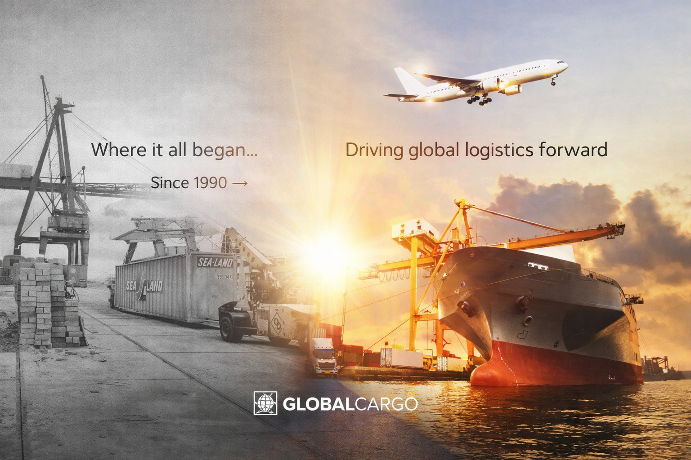
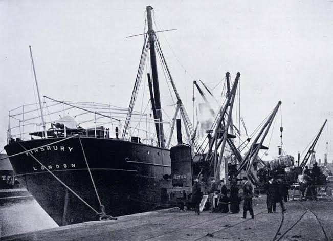

For over three decades, Global Cargo Shipping Company has connected businesses and people across the globe. This is our story — of vision, resilience, and an uncompromising commitment to delivering more than packages.
The story of Global Cargo Shipping Company begins in the autumn of 1990, in a modest freight office on the outskirts of London. Founded by a team of determined logistics professionals who believed that international shipping could be done with greater transparency, care, and reliability than the industry standard of the time, GCSC was built on a simple but powerful promise: every shipment, treated as if it were our own.
In those early years, the company carved a reputation across the United Kingdom and Europe for its personal service, meticulous customs knowledge, and the kind of accountability that larger competitors simply couldn't match. Small businesses, manufacturers, and even private individuals chose GCSC not because it was the cheapest, but because it was the best.
By the mid-1990s, GCSC had established freight corridors across Western Europe, expanded its air freight capabilities, and signed its first transatlantic partnership agreements — setting the stage for the company's defining chapter.

